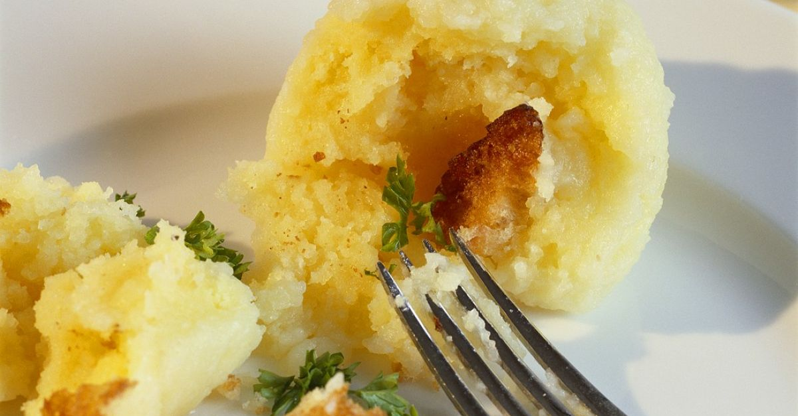

Potato Dumplings

Description
Ingredients
- 2 large potatoes, peeled and chopped
- 1 cup self-rising flour
- 1 egg
- 8 large seasoned croutons
- Bring a large pot of salted water to a boil. Add potatoes and cook until tender, about 15 minutes. Drain and mash.
- In a medium bowl combine 2 cups mashed potatoes with flour and egg. Using about 1/4 to 1/2 cup of mixture each, shape into dumplings. Press a crouton into the center of each and seal dough around it.
- Drop dumplings into simmering soup or broth, cover and cook 20 minutes. Do not remove lid while dumplings are cooking.